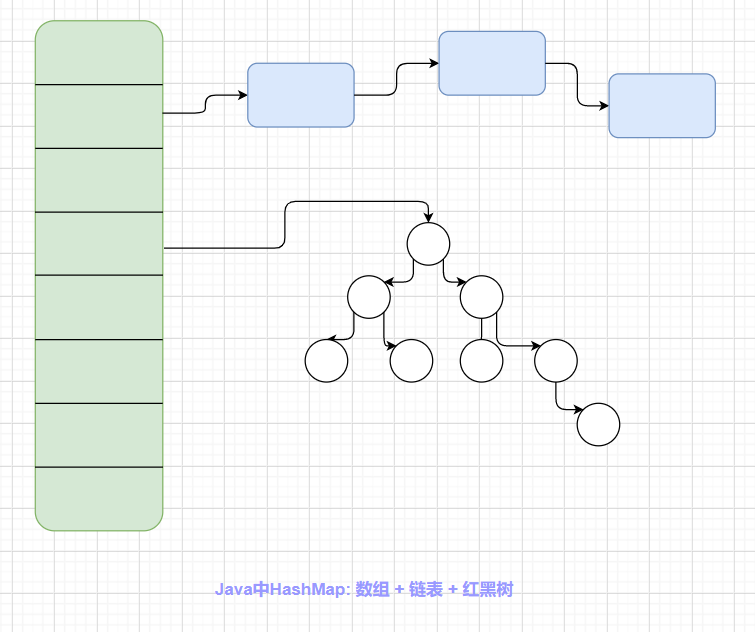
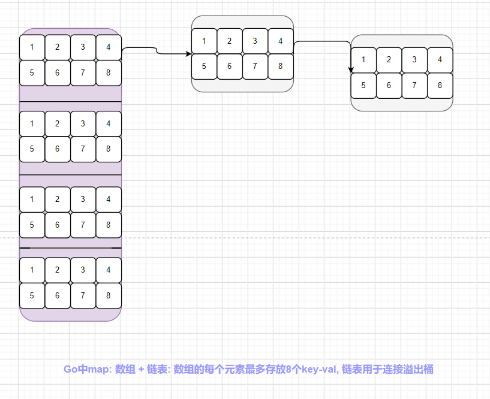
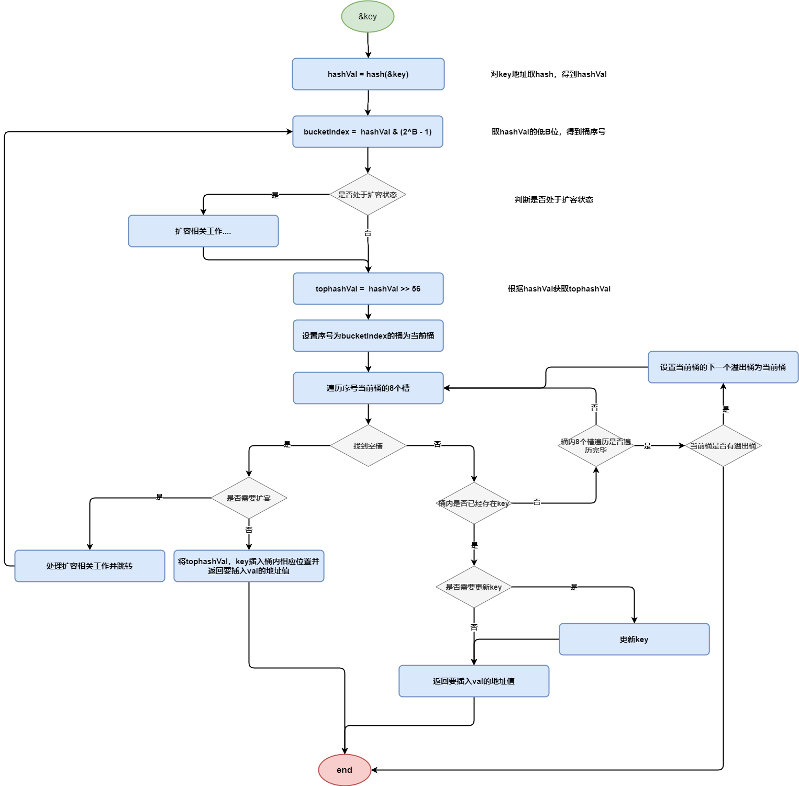

和slice一样，map在日常开发中使用的也非常广泛，map是一种无序的基于key-value的数据结构，它的底层实现相比slice来说复杂许多。和上一篇文章一样，本文基于Go1.15源码 + windows amd64位机，对map源码进行深入剖析。(更新中)
map创建
Go语言map的创建方式有一下几种
| 序号 | 方式 | 示例 |
|---|---|---|
| 1 | 声明方式 |
var m map[string]string |
| 2 | new关键字 |
m := *new(map[string]string) |
| 3 | make关键字 |
m := make(map[string]string) |
| 4 | 直接创建 |
m := map[string]string{"": ""} |
由于map是引用类型，因此使用声明方式创建map时在使用之前必须初始化。以上四种方式中最常用的是后面两种使用方式，第二种基本不会使用。
概述
本文假设读者对哈希表(散列表)数据结构有一定的了解，因此不会对哈希表相关概念进行介绍。Go语言中对于冲突的处理采用的是拉链法。但是和Java中HashMap采用的拉链法有所不同，Go语言并不是在遇到冲突时为冲突的key构造一个节点，然后将该节点插入到相应槽中的链表中，而是以桶为单位：每一个槽就是一个桶，每一个桶最多可以放8个key-val。当遇到哈希冲突时不用临时构造节点插入链表，直接放到桶中即可。当桶的8个空位全部被占用后，对于后面发生冲突的key，会在该桶后面接一个溢出桶存放key。如下图所示：
Java HashMap实现

Go map实现

Go语言中map的实现比图示要复杂得多，上图只是为了让读者能够初步了解map的整体架构。
map整体设计
和slice不同，map的实现要复杂许多，涉及到的结构体也更多一些，并且还涉及到了编译期间的加料，在本节中笔者将结合图示对map中涉及到的所有结构体进行详细介绍，从宏观层面上分析map是如何设计实现的。本节只涉及map的宏观设计，除了核心结构体外不涉及任何源码操作，如果读者只是对map的源码细节感兴趣，可以直接看第二节。
hmap结构体
hmap结构体是map底层的核心，用于表示一个map结构。它的实现如下所示
1 | type hmap struct { |
对于hmap的字段，注释已经说明的很详细，这里就不做赘述。通过注释我们可以发现：map的数据都存放在以buckets为首地址的连续内存中(未扩容情况下)，那么我们再看看bucket是如何表示的
bmap结构体
bmap结构体用来存储map中的数据，一个bmap表示一个桶。hmap中的buckets字段指向一块连续内存，该连续内存可以理解为一个bmap数组(桶数组)，后面说一个桶，就是一个bmap实例。它的实现如下所示：
1 | type bmap struct { |
看到这里读者可能觉得很疑惑，前面说到map中所有的数据都存储在bmap中，但是上面bmap结构体却并没有看到key和val的值，这是什么原因呢？这是因为编译器在编译的时候会对上面的bmap结构体加料(具体代码见: src/cmd/compile/internal/gc/reflect.go: bmap函数)，也就是给它填充几个字段，填充后的bmap如下所示
1 | type bmap struct { |
map内存布局
根据hmap和bmap这两个结构体，和概述一节中Go map架构图，可以进一步画出更加详细准确的图来描述map的内存布局

让我们更进一步，看看每个桶(bmap)的内存布局

通过图中可以看到：正常情况下hmap中的buckets字段指向bmap数组的首地址，map中的数据就存放在bmap中。一个桶(bmap)最多可以存放8个k-v，并且在桶中的存放形式是key和val各自组成一个长度为8的数组单独存放，而不是k-v成对存放，通过源码注释我们可以明白这么设计的原因：这样设计能够有效的减少填充，从而达到节约内存的目的。例如，有这样一个类型的 map：map[int64]int8，如果按照 key/value... 这样的模式存储，那在每一个 key/value 对之后都要额外 padding 7 个字节；而将所有的 key，value 分别绑定到一起，这种形式 key/key/.../value/value/...，则只需要在最后添加 padding即可。
extra
上面笔者介绍了hmap结构体和bmap结构体，并且对map的整体布局做了更进一步的图解，但是对于途中涉及到的extra字段，笔者还没有介绍。那么hmap中的extra字段有什么作用呢？为什么说它是可选的呢？下面笔者就对extra字段进行介绍。
1 | type mapextra struct { |
为什么需要extra字段
通过对map底层三个核心结构体的描述，细心的读者可能会感到疑惑：bmap中已经有了指向溢出桶的overflow指针，为什么还需要一个extra字段来单独存放溢出桶相关指针呢？这一点map源码中的已经告诉了我们答案：当map的key和val均不含指针并且可以内联(size < 128字节)时，bmap可以被标注为不包含指针，这样可以避免GC时扫描整个map(扫描所有的bmap)，但是存在矛盾的是，bmap本身就包含了一个指向溢出桶的指针overflow，因此hmap才增加了extra字段，用来保存溢出桶信息，这样如果bmap不包含指针(除了overflow指针)，那么GC扫描时只需要扫描extra字段中的溢出桶而不用扫描整个map。
key的定位
无论是对map进行赋值、查找、删除，都涉及到key的定位。那么对于一个给定的key，是如何映射到map中某个指定得桶(bmap)呢？并且一个桶中最多可以存储8个k-v(后面简称8个槽)，又是如何确定key在桶中的确切位置呢？在本小节中笔者将从宏观层面上对key的定位过程进行剖析。
- 对
key的地址取hash，得到hashVal - 取hashVal的低B(B为hmap的字段)位，用这该值确定key映射的桶序号
- 取hashVal的高8位，得到一个tophashVal。
- 如果是
查找|删除|修改，那么遍历桶(上一步定位到的)内的8个tophash数组，找到和tophashVal相等的tophash值，并进一步判断它们的key是否相等，如果不同说明出现了hash冲突，继续往后遍历；如果当前桶还存在溢出桶，那么还要遍历当前桶的溢出桶，直到找到相应的key为止。 - 如果是
插入，那么遍历桶(上一步定位到的)内的8个tophash数组，找到一个为空的为止，把tophashVal, key, val分别插入即可，如果当前桶内没有空余的槽，那么遍历当前桶的溢出桶继续寻找空位，如果没有溢出桶或者当前桶所有的溢出桶都没有空位，那么申请一个溢出桶并把tophashVal，key，val插入溢出桶的第一个槽即可。该流程建立在没有满足扩容条件的情况下
- 如果是
对于key的定位map是这样处理的：求得相应的hash值后，利用该hash值得低B位确定key应该在哪个桶中，再利用hash的高8位(即tophash)确定key在桶内的位置。如图所示

注意：图源网络，图中对key求hash有误，应该是对key所在的地址值求hash
在后面三个小节中，笔者将通过三幅流程图分别介绍map的插入、查找以及删除过程。
插入流程图

map的插入过程如上图所示，其中省略了扩容相关内容和次要的判断逻辑。可以看到map的插入整体逻辑上并不复杂。
查找流程图

map的查找过程如上图所示
删除流程图

前置知识
和上一节一样，为了便于理解，笔者会对map源码中涉及到的一些常量和内置类型进行介绍，其中对于上一节中涉及到的知识这里就不做赘述。
- 桶中元素个数
1 | // 一个桶最多容纳8个元素(k-v) |
- map负载因子
1 | // 负载因子为 13 / 2 = 6.5 |
- k-v最大值
1 | // 当key/val大于128时, 会将指针存储到桶中, 指针指向实际的k和val |
- 值偏移量
1 | // 该位移设计便于计算桶中key的起始位置, 后面会详细说明 |
- 特殊高位Hash值
1 | emptyRest = 0 // 当前槽为空, 并且当前槽以后的所有槽都为空 |
- 状态标志
1 | iterator = 1 // |
- 其他
1 | // 该常量在遍历map时会使用, 后文涉及到此内容时再做说明 |